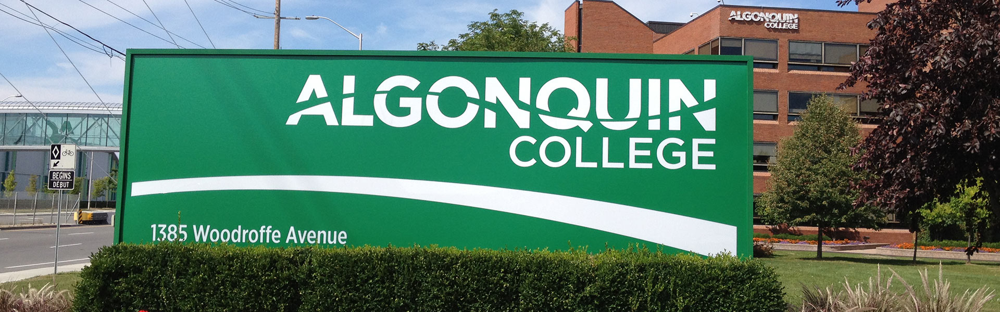

ALGONQUIN COLLEGE
Algonquin’s organizational philosophy is defined by its mission, vision and core values. The following are intended to serve as points of inspiration, carefully articulating our purpose
| ALGONQUIN COLLEGE | ||||
| Ottawa | ||||
| Pembroke | ||||
| Perth | ||||
| INTAKES | ||||
| September, January, May | ||||
| Program | Credential | Intake | Campus | Duration |
| Action Sports Park Development | Certificate | September | Pembroke | 1 Year |
| Advanced Care Paramedic | Diploma | September | Ottawa | 1 Year |
| Advertising and Marketing Communications Management | Advanced Diploma | September | Ottawa | 3 Years |
| Aircraft Maintenance Technician | Diploma | August | Ottawa | 2 Years |
| Animation | Advanced Diploma | September | Ottawa | 3 Years |
| Applied Museum Studies | Advanced Diploma | September | Ottawa | 3 Years |
| Applied Nuclear Science & Radiation Safety | Diploma | September | Pembroke | 2 Years |
| Architectural Technician (Co-op and Regular Options) | Diploma | January, September | Ottawa | 2 Years |
| Architectural Technology(Co-op/Applied Research/Field Project) | Advanced Diploma | September | Ottawa | 3 Years |
| Aviation Management General Arts and Science | Diploma | September | Ottawa | 2 Years |
| Bachelor of Automation and Robotics | Bachelor Degree | September | Ottawa | 4 Years |
| Bachelor of Building Science (2-Year Bridging Program) (Co-op) | Bachelor Degree | September | Ottawa | 4 Years |
| Bachelor of Building Science (3-Year Bridging Program) | Bachelor Degree | September | Ottawa | 4 Years |
| Bachelor of Building Science (Honours) | Bachelor Degree | September | Ottawa | 4 Years |
| Bachelor of Commerce (e-Supply Chain Management) (Honours) | Bachelor Degree | September | Ottawa | 4 Years |
| Bachelor of Early Learning and Community Development (Honours) | Bachelor Degree | September | Ottawa | 4 Years |
| Bachelor of Hospitality and Tourism Management (Honours) (Co-op) | Bachelor Degree | September | Ottawa | 4 Years |
| Bachelor of Information Technology Information Resource Management | Bachelor Degree | September | Ottawa | 4 Years |
| Bachelor of Information Technology Network Technology | Bachelor Degree | September | Ottawa | 4 Years |
| Bachelor of Information Technology Photonics and Laser Technology (BIT-PLT) | Bachelor Degree | September | Ottawa | 4 Years |
| Bachelor of Interior Design (Honours) | Bachelor Degree | January, September | Ottawa | 4 Years |
| Bachelor of Public Safety (Honours) (Co-op) | Bachelor Degree | September | Ottawa | 4 Years |
| Bachelor of Science in Nursing | Bachelor Degree | September | Ottawa, Pembroke | 4 Years |
| Baking & Pastry Arts | Certificate | January, September | Ottawa | 1 Year |
| Baking and Pastry Arts Management | Diploma | January, September | Ottawa | 2 Years |
| Biotechnology Advanced | Advanced Diploma | September | Ottawa | 3 years |
| Bookkeeping and Accounting Practices | Diploma | January, September | Ottawa | 1 year |
| Brand Managemen | Post Graduate | September | Ottawa | 1 Year |
| Brand Management | Post Graduate | September | Ottawa | 1 Year |
| Broadcasting Radio | Diploma | September | Ottawa | 2 Years |
| Broadcasting Television | Diploma | September | Ottawa | 2 Years |
| Building Construction Technician | Diploma | September | Ottawa | 1 Year |
| Building Information Modeling Lifecycle Management | Post Graduate | September | Ottawa | 1 Year |
| Business | Diploma | September | Ottawa, Pembroke | 1 year |
| Business Administration Core | Advanced Diploma | January, September | Ottawa | 3 Years |
| Business Agriculture | Diploma | September | Ottawa | 2 Years |
| Business Fundamentals | Certificate | September | Ottawa | 1 year |
| Business Intelligence System Infrastructure | Post Graduate | September | Ottawa | 1 Year |
| Business Accounting | Post Graduate | January, September | Ottawa | 2 Years |
| Business Management and Entrepreneurship | Diploma | January, September | Ottawa | 2 Years |
| Business Marketing | Diploma | January, September | Ottawa | 2 Years |
| Cabinetmaking and Furniture Technician | Diploma | September | Ottawa | 1 Year |
| Cardiovascular Technology | Diploma | September | Ottawa | 2 Years |
| Carpentry and Joinery Heritage | Diploma | September | Ottawa | 2 Years |
| Carpentry and Renovation Techniques | Certificate | September | Pembroke | 1 Year |
| Child and Youth Care | Advanced Diploma | September | Ottawa | 3 Years |
| Civil Engineering Technology (Co-op Option) | Advanced Diploma | September | Ottawa | 3 Years |
| Clinically Intensive Orientation to Nursing in Ontario | Post Graduate | September | Ottawa | 1 Year |
| Community and Justice Services | Diploma | September | Ottawa | 2 Years |
| Computer Engineering Technology Computing Science | Advanced Diploma | January, May, September | Ottawa | 3 years |
| Computer Programmer | Diploma | January, May, September | Ottawa | 2 Years |
| Computer Systems Technician | Diploma | January, May, September | Ottawa | 2 Years |
| Computer Systems Technician | Diploma | May, September | Pembroke | 1 year |
| Computer Systems Technology Security | Advanced Diploma | September | Ottawa | 3 years |
| Construction Engineering Technician | Diploma | January, September | Ottawa | 2 years |
| Culinary Management | Diploma | September | Ottawa | 2 Years |
| Culinary Skills | Certificate | January, May, September | Ottawa | 1 Year |
| Dental Assisting (Levels I and II) | Certificate | January, September | Ottawa | 1 Year |
| Dental Hygiene 3 years | Advanced Diploma | September | Ottawa | 3 Years |
| Design Studies | Certificate | September | Ottawa | 1 Year |
| Developmental Services Worker | Diploma | September | Ottawa | 2 Years |
| Diagnostic Cardiac Sonography | Post Graduate | September | Ottawa | 54 Weeks |
| Diagnostic Medical Sonography | Post Graduate | September | Ottawa | 2 Years |
| Digital Health | Post Graduate | September | Ottawa | 1 year |
| Early Childhood Education | Diploma | January, September | Ottawa, Pembroke, Perth | 2 Years |
| Electrical Engineering Technician | Diploma | January, September | Ottawa | 2 Years |
| Electrical Engineering Technology | Advanced Diploma | September | Ottawa | 3 Years |
| Electro-Mechanical Engineering Technician | Diploma | January, May, September | Ottawa | 2 Years |
| Energy Management | Post Graduate | September | Ottawa | 1 Year |
| Environmental Management and Assessment | Post Graduate | May, September | Ottawa | 1 Year |
| Environmental Technician | Diploma | September | Pembroke | 1 year |
| Esthetician | Diploma | January, September | Ottawa | 1 year |
| Event Management | Post Graduate | January, September | Ottawa | 1 Year |
| Financal Services | Post Graduate | January | Ottawa | 1 Year |
| Fitness and Health Promotion | Diploma | January, September | Ottawa | 2 Years |
| Food and Nutrition Management | Post Graduate | September | Ottawa | 1 Year |
| Forestry Technician | Diploma | September | Pembroke | 1 year |
| Game Development | Advanced Diploma | September | Ottawa | 3 Years |
| General Arts and Science | Certificate | September | Ottawa | 1 Year |
| Geographic Information Systems | Post Graduate | September | Ottawa | 1 Year |
| Graphic Design | Advanced Diploma | September | Ottawa | 3 Years |
| Green Architecture | Post Graduate | September | Ottawa | 1 Year |
| Hairstyling | Diploma | January, September | Ottawa | 2 Years |
| Heating, Refrigeration, and Air Conditioning Technician | Diploma | January, September | Ottawa | 1 Year |
| Horticultural Industries | Diploma | September | Ottawa | 2 Years |
| Hospitality Hotel & Restaurant Operations Management | Diploma | January, September | Ottawa | 2 Years |
| Human Resources Management | Post Graduate | January, September | Ottawa | 1 Year |
| Illustration and Concept Art | Diploma | September | Ottawa | 1 year |
| Interactive Media Design | Diploma | September | Ottawa | 2 Years |
| Interactive Media Management | Post Graduate | January, September | Ottawa | 1 Year |
| Interdisciplinary Studies in Human-Centred Design | Post Graduate | September | Ottawa | 1 Year |
| Interior Decorating | Diploma | September | Ottawa | 2 Years |
| International Business Management | Post Graduate | May, September | Ottawa | 1 Year |
| Internet Applications & Web Development | Diploma | September | Ottawa | 2 Years |
| Journalism | Diploma | September | Ottawa | 2 Years |
| Law Clerk | Diploma | January, September | Ottawa | 2 Years |
| Law Clerk (Intensive) | Diploma | September | Ottawa | 1 Year |
| Library and Information Technician | Diploma | September | Ottawa | 2 Years |
| Manufacturing Engineering Technician | Diploma | September | Ottawa | 2 Years |
| Marketing Management | Post Graduate | January | Ottawa | 1 Year |
| Marketing Research and Business Intelligence | Post Graduate | September | Ottawa | 1 Year |
| Massage Therapy | Advanced Diploma | September | Ottawa | 3 Years |
| Massage Therapy (Intensive) | Advanced Diploma | September | Ottawa | 2 Years |
| Mechanical Engineering Technology (Co-op and Regular Options | Advanced Diploma | January, May, September | Ottawa | 3 Years |
| Mechanical Techniques Plumbing | Diploma | January | Ottawa | 1 Year |
| Medical Device Reprocessing | Certificate | September | Ottawa | 1 Year |
| Medical Radiation Technology | Advanced Diploma | September | Ottawa | 3 Years |
| Mobile Application Design & Development | Diploma | September | Ottawa | 2 Years |
| Mobile Application Design and Development | Diploma | September | Ottawa | 2 Years |
| Motive Power Technician | Diploma | September | Ottawa | 1 Year |
| Music Industry Arts | Diploma | September | Ottawa | 1 year |
| Occupational Therapist Assistant /Physiotherapist Assistant | Diploma | September | Ottawa | 2 Years |
| Office Administration Executive | Diploma | September | Pembroke | 2 Years |
| Office Administration General | Diploma | January, September | Ottawa | 1 year |
| Office Administration Health Services | Diploma | September | Ottawa | 2 Years |
| Office Administration Legal | Diploma | September | Ottawa | 2 Years |
| Orientation to Nursing in Ontario for Nurses | Post Graduate | September | Ottawa | 1 year |
| Outdoor Adventure | Diploma | September | Pembroke | 2 Years |
| Outdoor Adventure Naturalist | Diploma | September | Pembroke | 1 year |
| Paralegal Graduate Certificate | Post Graduate | January, September | Ottawa | 1 Year |
| Paramedic | Diploma | September | Ottawa | 2 Years |
| Performing Arts | Certificate | September | Ottawa | 1 Year |
| Personal Support Worker | Certificate | January, May, September | Ottawa, Pembroke, Perth, Perley and Rideau | 1 Year |
| Photography | Diploma | September | Ottawa | 2 Years |
| Police Foundations | Diploma | January, September | Ottawa, Pembroke, Perth | 2 Years |
| Powerline Technician | Diploma | September | Ottawa | 2 Years |
| Practical Nursing | Diploma | January, September | Ottawa, Pembroke | 2 Years |
| Practical Nursing FTN (Foreign-Trained Nurse) | Diploma | September | Ottawa | 2 Years |
| Pre-Health Science Pathway to Certificates & Diplomas | Certificate | September | Ottawa, Pembroke | 1 Year |
| Pre-Health Science Pathways to Advanced Diplomas & Degrees | Certificate | September | Ottawa | 1 Year |
| Pre-service Firefighter Education and Training | Certificate | September | Ottawa | 1 year |
| Professional Writing | Diploma | September | Ottawa | 2 Years |
| Project Management | Post Graduate | January, September | Ottawa | 1 Year |
| Public Relations | Diploma | January, September | Ottawa | 2 Years |
| Recreation and Leisure Services | Diploma | September | Ottawa | 2 Years |
| Regulatory Affairs Sciences | Post Graduate | September | Ottawa | 1 Year |
| Respiratory Therapy | Advanced Diploma | September | Ottawa | 3 Years |
| Retirement Communities Management | Post Graduate | September | Ottawa | 1 Year |
| Scriptwriting | Post Graduate | September | Ottawa | 1 Year |
| Social Service Worker | Diploma | September | Ottawa, Pembroke | 2 Years |
| Social Service Worker (Intensive) | Diploma | September | Ottawa | 1 year |
| Sommelier | Certificate | September | Ottawa | 1 Year |
| Spa & Wellness Operations Management | Post Graduate | September | Ottawa | 1 Year |
| Sport Business Management | Post Graduate | September | Ottawa | 1 Year |
| Technical Writer (Co-op and Regular Options) | Post Graduate | September | Ottawa | 1 Year |
| Therapeutic Recreation | Post Graduate | September | Ottawa | 1 Year |
| Tourism Travel Services | Diploma | January, September | Ottawa | 2 Years |
| Urban Forestry Arboriculture | Certificate | September | Pembroke | 1 Year |
| Veterinary Assistant | Certificate | May | Ottawa | 1 Year |
| Veterinary Technician | Diploma | September | Ottawa | 2 Years |
| Victimology | Diploma | September | Ottawa | 1 Year |
| Water and Wastewater Technician | Diploma | September | Ottawa | 2 years |
| Welding and Fabrication Techniques | Certificate | May, September | Ottawa | 1 Year |